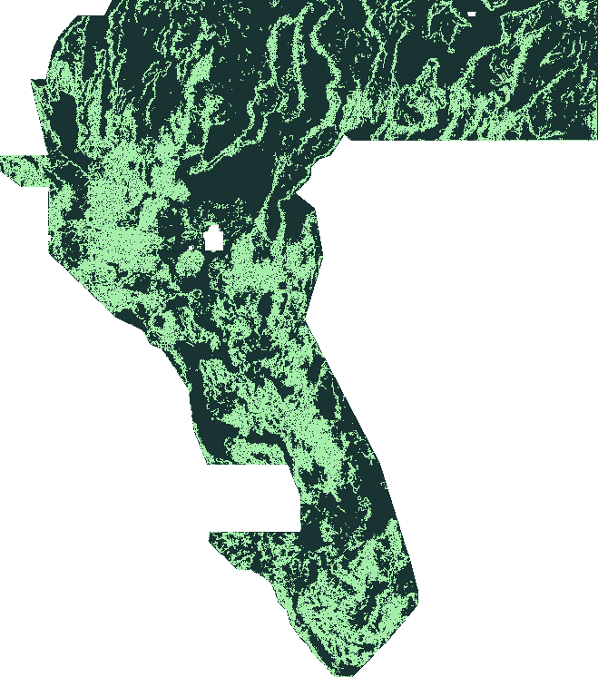

READY TO SUBMITDownload → upload → paste the Note.No account data, no modelling and no install needed. Files are re-validated and hashed before publishing.
EXPERIMENT 003 · COVERLINE COVER WHAT THE LABELS MISS
Find the faults. Not the ones already known.
The hidden test faults are missing from the supplied labels by construction. This run derives its emission budget from the official metric itself — every emitted pixel costs 0.2 of the Tversky denominator, so a pixel has to cover ground truth that nothing else covers — then sweeps twelve support levels on a rotated spatial partition.
3 format-validated GeoTIFFs, each with its own filename and Note. They are designed as a set: the first is our best estimate, the next two test why it did or didn't work. Format-validated locally. No file here has a known competition score.
The official metric is a distance-weighted Tversky index with α = 0.2 and β = 0.8 and a triangular
kernel of 300 m (3 pixels). For a binary emission at p = 1, adding one pixel changes the denominator by
ΔD = 0.2 × (coverage credit it newly contributes)
+ 0.2 × (1 − k(distance to nearest truth)) ≤ 0.2
A pixel that becomes the best cover of a hidden-truth pixel adds 1 to TP and removes 0.8 from FN,
and its own false-positive weight is 1 − k. Both parts are bounded by 0.2, so the cost is at most
0.2 whether or not the pixel is right. Write a for the numerator credit a set of
added pixels newly earns and b for the false-positive weight they add. The index rises
exactly when a × (1 − 0.2 × DTI) > 0.2 × DTI × b. To leading order that is the
break-even a tranche has to beat: 0.061 per added pixel
at the public lead of 0.3049 — roughly, land within 2.8 pixels of truth that nothing else covers.
The table reports a, b and both sides of that test, so no reader has to take
the approximation on trust.
That is why this experiment sweeps twelve support levels, keeps a β/α-weighted classifier next to
the regression control, and publishes what every tranche actually bought. A binary emission is a
deliberate consequence of the metric, not a claim to be a calibrated probability.
Pixel denominator cost
0.2
Break-even credit per pixel at 0.3049
0.0610
Kernel support
300 m = 3 pixels, triangular
α / β
0.2 false positives / 0.8 false negatives
Support levels swept
12
Candidate policies evaluated
96
The published file is chosen by the pre-registered rule in
configs/coverage-v3.json, which is hash-bound into the frozen selection. The table below
is a diagnostic of the selected arm on the tuning fold; it did not choose the winner after the fact.
Measured marginal value of each support tranche on the tuning fold
(nested tranches, so each row is exactly the pixels the extra support added). Credit per added pixel =
added TPw ÷ added pixels; break-even is the leading-order 0.2 × DTI of that row.
Support target
Floor
Emitted
Tuning DTI
Added pixels
Added TPw
Added FPw
Credit per added pixel
Break-even
0.5000%
0.6446
0.63%
0.0386
5,484
371.79
5117.30
0.0678
0.0077
0.7500%
0.6230
0.77%
0.0497
1,197
119.72
1084.99
0.1000
0.0099
1.0000%
0.6060
0.91%
0.0634
1,234
151.47
1114.72
0.1227
0.0127
1.5000%
0.5795
1.25%
0.0928
2,947
353.48
2660.61
0.1199
0.0186
2.0000%
0.5582
1.63%
0.1207
3,374
382.81
3045.36
0.1135
0.0241
3.0000%
0.5236
2.52%
0.1661
7,712
773.79
6926.55
0.1003
0.0332
4.0000%
0.4941
3.43%
0.1984
7,952
729.57
7093.57
0.0917
0.0397
5.0000%
0.4669
4.36%
0.2219
8,071
691.93
7221.77
0.0857
0.0444
6.0000%
0.4409
5.25%
0.2341
7,803
552.94
7061.49
0.0709
0.0468
8.0000%
0.3898
6.97%
0.2425
14,991
860.80
13806.61
0.0574
0.0485
10.0000%
0.3359
8.69%
0.2390
14,974
628.90
14074.67
0.0420
0.0478
12.0000%
0.2730
10.66%
0.2247
17,178
426.58
16515.62
0.0248
0.0449
Read the last two columns together with added FPw: a tranche pays only if
it clears the exact test above, not the leading-order column alone. From the 10% row the measured credit
falls below break-even, which is why the selected policy stops at 4% and the third published file is
labelled a recall probe. Every number is measured on public stand-in labels, never on the hidden expert
labels.
Browser generation preserves the model pixels, not the original TIFF container. Its filename and container hash are shown after building. No data is uploaded; no model is trained in your browser. Rebuilding changes the file identity, not the predictions or experiment.
Not yet competition-scored. Format validity is not a claim of improved accuracy.
GEODAWN / NEVADA & CALIFORNIA UTM 11N

N ↑100 M GRID EPSG:32611
Model-predicted tracesMax-pooled preview
A new field. Not a renamed file.
452,194 valid pixels differ from the archived ensemble (8.8%). These are predictions—not confirmed discoveries.
PUBLIC LEADER0.3049DARD · official snapshotEXTRADR19 · BEST PUBLIC0.1563Account-level result, not artifact-linkedGAPFINDER FILESUnscored↗Ready for an authenticated uploadRIFTLINE · LOCAL UNION DTI0.2361Different labels. Not leaderboard-comparable.
The target is to beat the public lead. The next credible signal is a scored upload, followed by rotated spatial tests and a high-resolution terrain pilot.